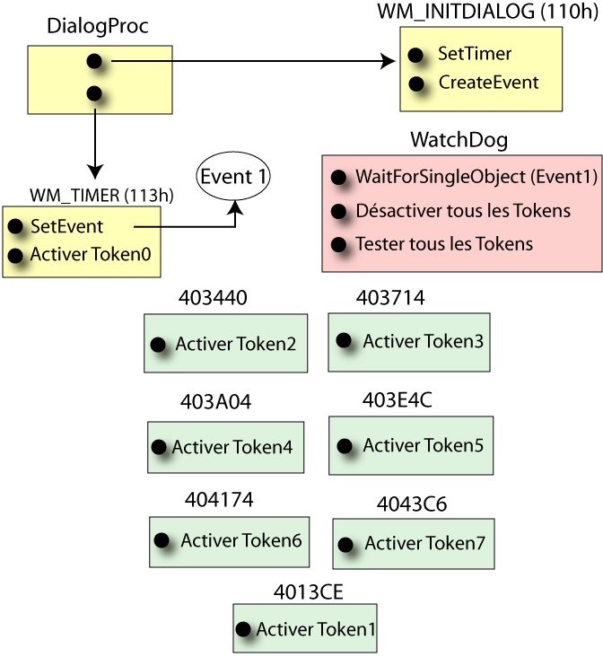

Date de publication : vendredi 30 juin 2006
Auteur : BeatriX
6. WatchDog
Voici un schéma simplifié qui illustre le principe du WatchDog utilisé ici :

Tout à l'heure, j'ai dit qu'il y avait 7 threads créés au démarrage. En réalité, il y en a 9 ! Les 2 que j'ai passé sous silence sont ce qu'on appelle les "WatchDog". Ce sont des threads qui ne font rien d'autre que de surveiller l'état des troupes. Ici, j'ai illustré le principe à l'aide d'un seul WatchDog. Ces threads sont donc là pour vérifier que tous les threads de calcul sont actifs et qu'ils n'ont pas été arrêtés par un utilisateur mal intentionné. Pour synchroniser tout ça, l'auteur a utilisé des Timers. Pour finir, les watchdogs vérifient également que les Timers sont opérationnels.
Si nous entrons un peu plus dans le détail, voici comment cela se passe. Pour communiquer avec les timers et les threads de calcul, le WatchDog utilise deux techniques : les Events et des "tokens" matérialisés sous forme de booléens.
Le Timer active un Event (ici, Event1) et le watchdog attend l'activation de cet Event durant un delai de 8 secondes à l'aide de WaitForSingleObject. Au delà de ce temps, le watchdog considère que le Timer est mort et ferme l'application.
Chaque thread de calcul passe un booléen (que j'ai appelé tokens) à true à chaque lancement de sa routine. Le watchdog, quant à lui, passe ces booléens à false, attend un bref instant, et teste ces mêmes booléens. Si l'un d'eux est False, ceci signifie que le thread en question est arrêté et le watchdog ferme l'application.
Portée de ce genre de watchdog ?
Ici , le watchdog permet de vérifier que les threads et les timers fonctionnent bien tous de concert. Si l'un des threads ou des timers ne démarre pas, l'application s'arrête. Maintenant, si nous posons des BP sur les threads de calcul, que se passe-t-il ?
En fait, le Debuggueur gèle l'application et tous les threads avec. On peut donc tracer tranquillement sans être inquiété des WatchDogs. Le seul souci probable est si on relance l'application (F9). Il peut se produire à peu près n'importe quoi. Le watchdog peut récupérer un WAIT_TIMEOUT ou détecter un token false ou alors il ne se passe rien et le programme continue sa route.
Copyright (C)- FRET (2006)